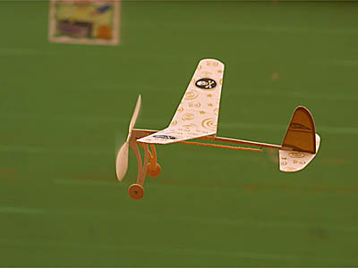
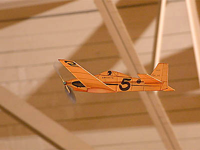

Marin Aero Club Contests
These are some pictures taken at recent Marin Aero Club Contests.
Normally we are not competition minded, but resort to
3 or 4 one design/class events a year to provide a little focus.
Other models are also most welcome at these outings as you will see.
Our next contest will be on May 26 for Peanut scale models of any kind. Prizes will be awarded based on cumulative flight time as well as scale appearance. We will also have a Mass Launch at the end of the day with the last model down winning an award as well. |
|||
These events are about fun.
|
|||

| 
|  |  |
| One Design Phantom Flash Contest - March 24, 2002
(not all the flying was with a Phantom Flash!) - 23 images |
|||
|---|---|---|---|
| One Design Dick Baxter Akro Contest - November 25, 2001
15 images | |||
return to
Marin Aero Club
FFML Gallery index |
Home Page
Copyright 1998-2002, Thayer Syme. All rights reserved